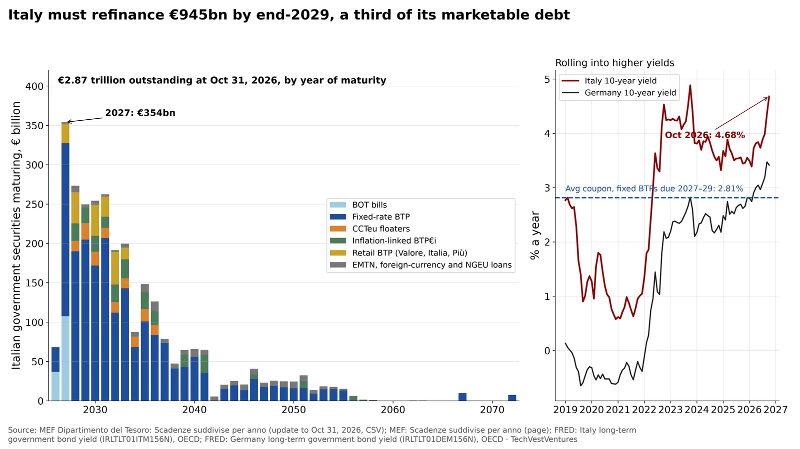
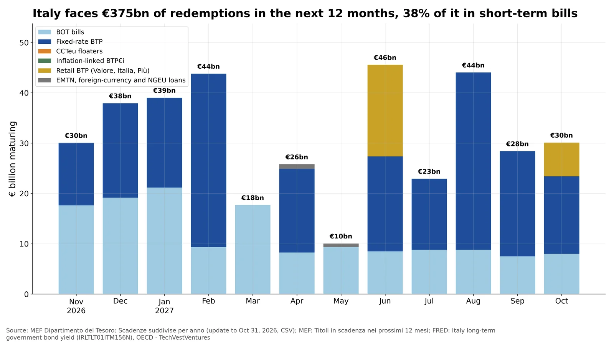

Q11. Italy BTP Wall

Italy's Treasury (MEF, Direzione Debito Pubblico) lists every outstanding government security by maturity. At Oct 31, 2026, €2,870bn was outstanding after excluding the bills and bonds that already matured this year; €945bn (33%) falls due by the end of 2029 and €375bn within the next 12 months. 2027 is the peak year at €354bn. The fixed-rate BTPs maturing in 2027–29 (€615bn) carry an average coupon of 2.81%, against an Italian 10-year yield of 4.68% in October 2026, so each rollover raises the interest bill unless yields fall. The same wall holds €144bn of short BOT bills, which reprice within a year whatever happens. The other side: the Treasury has lengthened issuance, so about half of the stock matures after 2031, and its retail BTP Valore and BTP Italia issues give it a domestic buyer base beyond banks and foreign funds.
- Maturing by year (€bn, Nov–Dec only for 2026): 2026 68; 2027 354; 2028 273; 2029 250; 2030 254; 2031 263; 2032 191.
- By instrument, all maturities: BOT bills €144bn; Fixed-rate BTP €2,011bn; CCTeu floaters €133bn; Inflation-linked BTP€i €223bn; Retail BTP (Valore, Italia, Più) €186bn; EMTN, foreign-currency and NGEU loans €174bn.
- Average coupon on fixed-rate BTPs maturing 2030 and later: 3.25% (€1,365bn). Inflation-linked amounts are the inflation-revalued values the Treasury reports.
- NGEU rows are Italy's scheduled repayments of EU Next Generation EU loans as listed by the Treasury; EMTN are its foreign-law notes.
Note: Values are the Treasury's 'circolante rivalutato' (inflation-revalued outstanding). Yields are monthly OECD averages.
Sources: MEF Dipartimento del Tesoro: Scadenze suddivise per anno (update to Oct 31, 2026, CSV) MEF: Scadenze suddivise per anno (page) FRED: Italy long-term government bond yield (IRLTLT01ITM156N), OECD FRED: Germany long-term government bond yield (IRLTLT01DEM156N), OECD

Month-by-month view of the same Treasury list: €375bn of Italian government securities mature between November 2026 and October 2027, about €31bn a month. The heaviest month is June 2027 at €46bn. BOT bills make up €144bn (38%), most of which the Treasury simply rolls into new bills at each auction; the rest, about €231bn of BTPs, floaters and retail bonds, must be refinanced at today's longer-term yields. This is gross refinancing only; new borrowing to cover the budget deficit comes on top.
- By month (€bn): Nov 2026 30; Dec 2026 38; Jan 2027 39; Feb 2027 44; Mar 2027 18; Apr 2027 26; May 2027 10; Jun 2027 46; Jul 2027 23; Aug 2027 44; Sep 2027 28; Oct 2027 30.
- Bills issued after Oct 31, 2026 will add further maturities inside this window; the chart shows only securities already outstanding.
Note: Values are the Treasury's inflation-revalued outstanding amounts at Oct 31, 2026.
Sources: MEF Dipartimento del Tesoro: Scadenze suddivise per anno (update to Oct 31, 2026, CSV) MEF: Titoli in scadenza nei prossimi 12 mesi FRED: Italy long-term government bond yield (IRLTLT01ITM156N), OECD